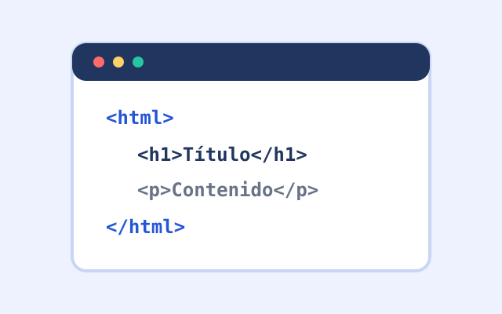
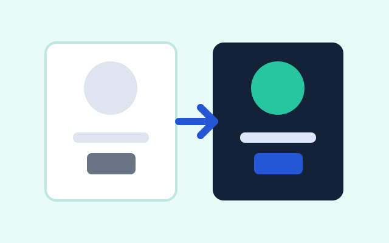
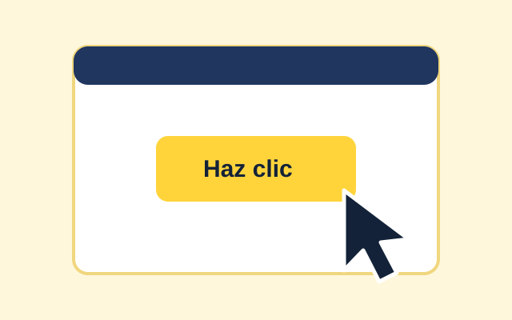
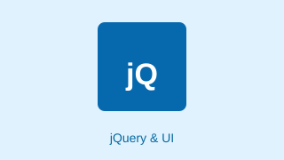
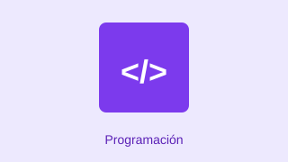
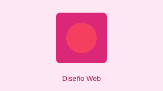

¿Qué es HTML5?
La base para escribir la estructura de una página web.
Leer resumenAPRENDER DESDE LO BÁSICO
Notas cortas sobre HTML, CSS y JavaScript.
<main> <h1>Hola, web</h1> </main>
Mostrando 6 de 6 artículos

La base para escribir la estructura de una página web.
Leer resumen
Colores, espacios y tamaños para que la página se vea ordenada.
Leer resumen
El lenguaje que le da vida y respuesta a la página.
Leer resumen
Librería que simplifica JavaScript y añade widgets interactivos.
Leer resumen
Conceptos de lógica, funciones y algoritmos para el desarrollo frontend.
Leer resumen
Técnicas de diseño adaptable, usabilidad y experiencia de usuario.
Leer resumenHTML5 es la versión actual del lenguaje que organiza el contenido de una página: títulos, párrafos, imágenes, menús y secciones como header, nav, main y footer.
Volver a los artículosCSS controla la apariencia: colores, tipografía, márgenes y la forma en que se acomodan los elementos, incluso en pantallas pequeñas.
Volver a los artículosJavaScript permite que la página reaccione a lo que hace la persona: validar formularios, mostrar mensajes o actualizar datos sin recargar.
Volver a los artículosjQuery facilita la manipulación del DOM, eventos y animaciones con menos código. Con jQuery UI agregamos componentes como autocompletado y botones interactivos.
Volver a los artículosLa programación en el navegador permite procesar datos, interactuar con el usuario y construir aplicaciones web modernas y dinámicas.
Volver a los artículosEl buen diseño web combina accesibilidad, estética y diseño responsive para que el sitio funcione fluidamente en cualquier tamaño de pantalla.
Volver a los artículos💡 Haz clic en una categoría para filtrar los artículos o vuelve a pulsarla para ver todos:
TecnoBlog reúne notas cortas para quienes empiezan en el desarrollo web. Cada artículo explica una idea con palabras sencillas y un ejemplo pequeño.